1 / 7

💻 TEKNOLOGI
Bos ChatGPT Blak-blakan: Dunia Harus Siap Kena Tipu & Diretas
Sam Altman: demi AI maju, dunia harus terima "hal buruk". Politisi AS langsung meradang. Geser →
2 / 7
🎙️
Di Podcast, Altman Ngomong Begini
CEO OpenAI Sam Altman bicara di podcast Politico "Decoded" (dibawakan Brendan Bordelon), terbit 4 Oktober 2026. Pernyataan kuncinya: dunia harus terima "some bad things happening" demi manfaat teknologi AI — sambil memastikan manusia tetap punya kendali. Yang bikin berita ini rame lagi 8–9 Oktober: liputan susulan media Indonesia plus gelombang reaksi politik di Amerika.
3 / 7
🚫
Nolak Janji Nol Risiko
Altman nggak mau menjamin nol peretasan, nol penipuan, dan nol penyalahgunaan AI — kompromi semacam itu ditolaknya. Alasannya: masyarakat menghasilkan kebaikan "orders of magnitude" lebih banyak dibanding risikonya. Tapi ada garis batasnya: ia menolak risiko katastrofik, termasuk "a serious loss of control" manusia atas AI.
4 / 7
⚔️
OpenAI vs Anthropic: Beda Kubu
Altman bilang ada "a lot of daylight" alias jurang lebar antara OpenAI dan Anthropic soal regulasi. Model di mana "satu lab di San Francisco mengendalikan semuanya" disebutnya trade-off yang sama sekali nggak bisa diterima. OpenAI dukung regulasi yang lebih ringan. Ini respons ke CEO Anthropic Dario Amodei, yang September lalu menerbitkan esai "We Must Pace the Frontier" menyerukan perlambatan model AI frontier.
5 / 7
🔥
Politisi AS Meradang
Kritik mengalir deras. Penulis soal AI Gary Marcus bilang Altman "saying the quiet part out loud". Gubernur Florida Ron DeSantis membalas di X: ini bukan wewenang "segelintir oligarki teknologi". Senator Elizabeth Warren menyebutnya "absurd", dan Ketua Komite Pertanian DPR AS G.T. Thompson bilang "kita harus bekerja lebih keras mencegah hal buruk terjadi".
6 / 7
💬
Kata netizen
Facebook MeidasTouch (3,6K likes, 750 komentar): banyak yang nanya "siapa yang dimaksud 'we'?" dan menuduh elit teknologi membebankan risiko ke publik. Facebook Futurism (3,3K likes, 1,8K komentar): netizen nuntut Altman sendiri yang pertama nanggung dampaknya. IG Senator Bernie Sanders (2,7M followers): mempertanyakan "hal buruk" apa yang harus diterima — PHK massal? krisis kesehatan mental anak? — dan menyerukan "Pause advanced AI NOW!". (Suara netizen — bukan fakta.)
7 / 7
🤔
Efeknya ke lo apa?
Debat ini menentukan seberapa bebas AI yang lo pakai tiap hari. Kalau kubu Altman menang: ChatGPT/Gemini tetap terbuka, murah, dan cepat berkembang — tapi lo makin sering nemu penipuan AI, deepfake, dan spam konten yang katanya "risiko yang harus diterima". Kalau kubu Amodei/Warren menang: AI makin aman tapi bisa makin mahal, dibatasi, atau fiturnya disunat. Buat yang ngerjain tugas, nonten, dan kerja pakai AI tiap hari — pertanyaannya bukan cuma "AI makin pintar atau enggak", tapi siapa yang nanggung ruginya waktu AI dipakai nipu: lo, atau bos-bosnya?